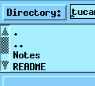
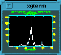
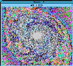
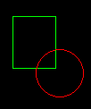

The basic widgets available to the IRAF GUI implimenter are the Athena Widgets, the gterm widget, the image display widget, and markers.
 Athena widgets  Gterm widget  Imtool widget  Marker widgets Parameters
 Widgets Widgets
Widgets Widgets